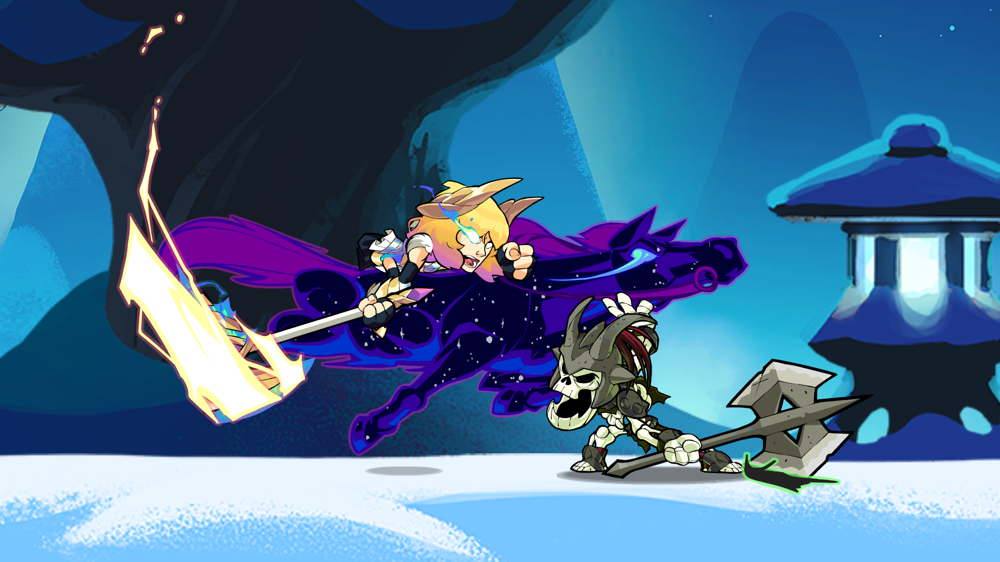

Casual Matchmaking is one of the Modes available in the game Brawlhalla. As the name implies, the mode is primarily meant for more casual players, compared to the Ranked mode.
You can only queue solo in this mode, meaning you will be placed against a random opponent.
There are four gamemodes that can be queued for when entering Casual Matchmaking. When queuing for any of these modes, the player can select one map to ban from play in the Lobby settings.
In this mode, the player is up against 3 other players in a 3 minute long Timed match. Players will earn 2 points for getting a KO, and lose 1 point for getting KO'd. The player with the most points win
Up to two people can be in the same queue for a match, whether it be a friend who joined online or locally on the same device
Strikeout 1v1
This mode is a 1v1 Strikeout battle, where the player and opponent must choose 3 different Legends and will swap Legends each time they lose a stock. You cannot queue with a partner in this mode and will be placed against a random opponent.
Friendly 2v2
This mode is a team Stock battle, with each player having 3 lives. Team damage is turned off, so attacks other than bombs and mines will not hurt your teammate.
Two people can queue for a match in this mode, however if a player queues alone they will be placed with a random teammate.
Experimental 1v1
This mode is a 1v1 Stock battle, with each player having 3 lives. The main difference in this mode is that test features are employed, which are slight modifications to the game that the developers are considering adding. The test features can be seen by clicking the button below the gamemode's card. Test Maps are also featured if there are any available.
Ranked
Ranked is a competitive game mode in Brawlhalla, played exclusively as 3-stock 1v1 or 2v2 matches on a map randomly selected from a reduced set of the available Maps. Additionally, there is a Seasonal Ranked Queue; similar to Brawl of the Week, this queue uses a different gamemode and alternates gamemodes each season.
Every player has a starting overall ELO of 1200 (Silver 2) and every Legend has a starting ELO of 750 (Tin 1). Winning a match in Ranked mode will award Elo to both the Player Ranking and the Legend that was played. Losing, however, will result in a deduction of Elo.
Playing Ranked is the only way to achieve Glory. Glory is earned at the end of each Season for 1v1 and 2v2 queues, while Glory can be earned mid-season by winning a certain amount of games or placing a certain rank in the Seasonal Ranked Queue.

Placements
Each season, the first 10 ranked matches count as the player's placements matches. These matches have a greater impact on the player's Elo, giving 3 times the Elo gain/loss for personal Elo in 1v1 and both personal and team Elo in 2v2. Additionally, the player's rating is hidden until the 10 matches are completed. Once a new season begins, the player's Elo will undergo a soft reset, and placement matches start again.
Completing the 10 placement matches makes the player eligible for end-of-season rewards, including Ranked Avatars and Ranked Loading Frames.
Rewards
Playing ranked allows players to unlock rewards exclusive to the mode. The following are granted at the end of the season:
Glory, a currency that can be used in the Store.
Ranked Avatars, which upgrade with best ranking each season.
A Loading Frame based on your best ranking of the previous season.
Rewards for the highest ranking, Valhallan, are instead granted immediately after reaching the rank:
A title for the season you reached Valhallan.
An avatar that has two states: "active" while in the Valhallan rank, and "inactive" after dropping lower.
A loading frame that can only be used while in the Valhallan rank.
Brawl of the week
Brawl of The Week is one of the online queuing Modes present in the game. In these lobbies, a different special gamemode is rotated in every Wednesday. The bonus of Brawl Of The Week is that the winners get 300 Gold. The prize, however, can only be claimed once per week by each player. After one week, the gamemode is changed and the prize is recharged, ready to be claimed again.
Gamemodes that are available in the rotation include some modes that are available through Custom Online, but also modes that can't be played elsewhere. Depending on the gamemode, it is also possible to queue with a second player in the same lobby.
Unlike other matchmaking modes, daily and Battle Pass missions can not be completed in Brawl Of The Week (unless otherwise specified).
Ghost Brawl
In this gamemode, all players are invisible, and jump in and out of invisibility when attacking. Damage is set to 200%, and all players have 3 lives. It has rotated in Brawl Of The Week in both 1v1 and 2v2 format.
Ghost in the Terminus
Similar to Ghost Brawl, players jump in and out of invisibility. The main difference is instead of being a Stock match, it is a 3 player free-for-all Timed match, with damage set to 300%.
Platform King
Who is the platform king? 4 Players face off on a map with 6 platforms. Stay on the red platform to score points. Hit your opponents to keep them from scoring. The platforms also move around the map, which makes moving around more difficult. The player with the most points at the end of a 2-minute timer wins.
Water Bomb Bash
Water Bomb Bash is a summer-themed gamemode. 6 players face off against each other with a 200% damage modifier and giant water bombs that continually spawn throughout the match. These water bombs create large explosions on impact that blast away anyone caught in it, even the player who threw it. Gain points for knocking people off the stage, the player with the most points winning at the end of the match.
Ghost Bubble Tag
A unique variant of Bubble Tag that mixes the invisibility mechanics of Ghost Brawl, teams of 2 face off in a Bubble Tag match where players are only visible when they attack. Bubbled players are not invisible. First team to 5 points wins.
Ghost Rooftop Rumble
This is a variant of Bounty with the invisibility mechanics of Ghost Brawl. Whoever gets the first KO is marked as the Bounty; eliminating the Bounty earns you more points, but also marks you as the Bounty. A unique aspect of this is the Bounty mark visual is not hidden, so whoever is marked can be tracked by their Bounty. The player with the most points at the end of the match wins.

{kind=link}